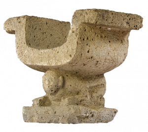

La ciudad. El cantón Santa Ana, geográficamente se encuentra ubicado en el centro sur de la Provincia de Manabí, en un hermoso valle rodeado por los cerros: Peminche y Bonce al noroeste, el cerro Mate al sur, las Guaijas y las montañas del Sasay al oeste; limita al Norte con el Cantón Portoviejo, al Sur con los Cantones Olmedo y 24 de Mayo; al Este con el Cantón Pichincha y al Oeste con los Cantones 24 de Mayo, Jipijapa y Portoviejo.El clima de Santa Ana es tropical seco con las estaciones de invierno y verano bien diferenciadas; la temperatura promedio anual es de 26°C. La temperatura máxima absoluta ha llegado a 37ªC y la mínima a 14ºC. Sin embargo, la variación diaria de la temperatura puede alcanzar hasta 10ºC.El cantón Santa Ana tiene una extensión de 1036,96 km2.
La densidad poblacional del cantón es de 43,67 habitantes por km2, siendo la cabecera cantonal la de mayor densidad, 67,38 habitantes/km2 y, la parroquia San Pablo de Pueblo Nuevo la de menor densidad poblacional, 23,93 habitantes/km2.
Influencia de la Cultura Manta Pese a que en Santa Ana se han encontrado vestigios cerámicos, no se cuenta con el aval de una investigación mediante la cual se establezca qué culturas influyeron en este territorio. No obstante, la especulación conduce a que tribus de la cultura Manta, que se desarrolló en las provincias de Manabí y Guayas se adentraron en esta región montañosa.
Viceparroquia Durante las primeras décadas del siglo XVIII, un punto en el centro de la montaña sur de la provincia llamado Vuelta Larga empezó a poblarse vertiginosamente. Al lugar llegaron comerciantes, agricultores, ganaderos, artesanos con sus respectivas familias. Entre los foráneos se encontraban Mariano Cevallos, Francisco Aráuz y Pedro José Moreira.